The Academic and Practice Seminar on Legal Technology, “Trusted Legal Intelligence in Practice,” was co-hosted by the AI & Law team of HKUST’s Division of Emerging Interdisciplinary Areas and the LexiHK team at HKUST Business School Central on 22 September 2026, combining on-site discussion with Zoom participation. Speakers from universities, legal information providers, legal-technology firms and law firms discussed verification, cross-jurisdictional differences and professional responsibility.
Professor Sirui Han opened with “From Usable to Trustworthy Legal AI: Data, Reasoning, Verification and Professional Responsibility”. She emphasized that verification and professional responsibility must remain central as legal AI enters real workflows. Producing an answer is only a starting point: whether its information can be checked and its conclusions reviewed also determines whether the technology can be used responsibly.
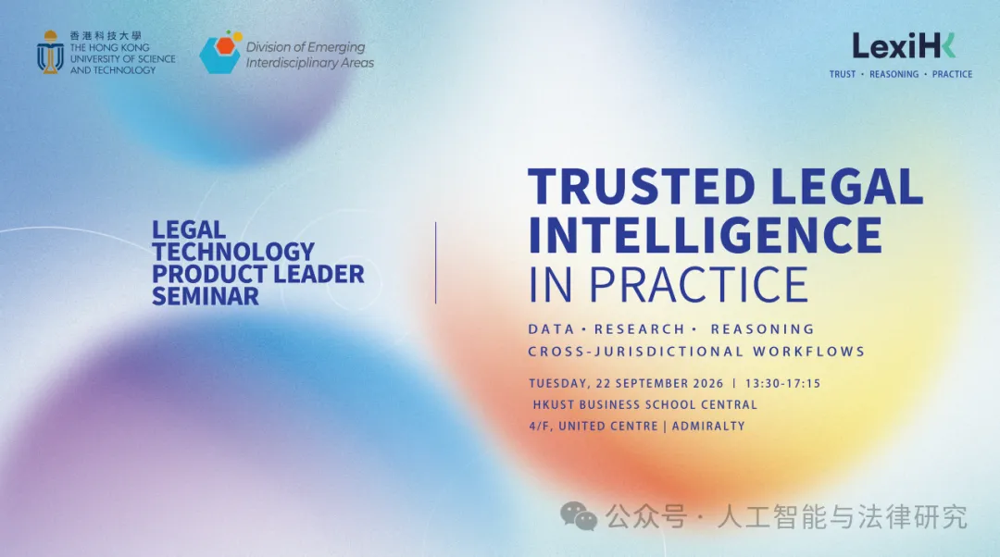
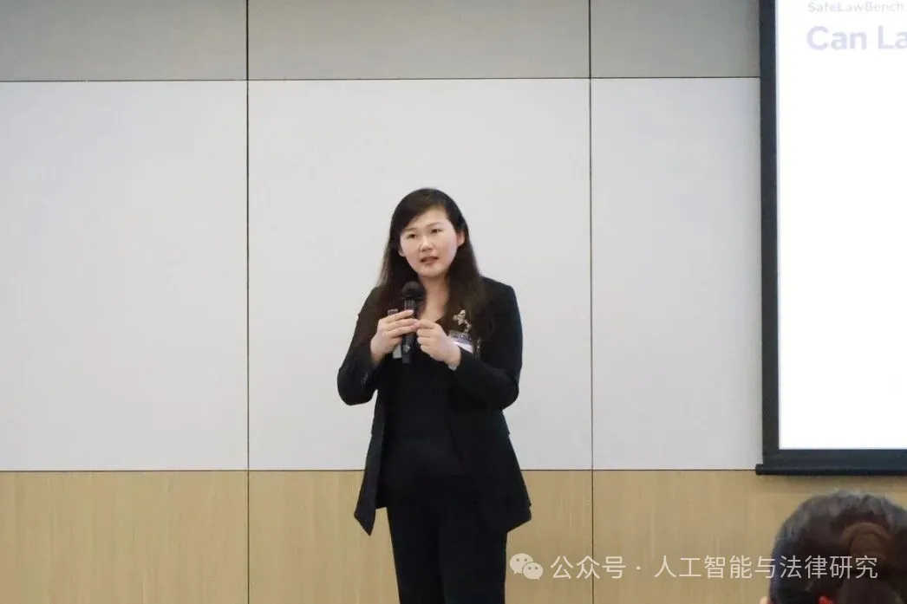
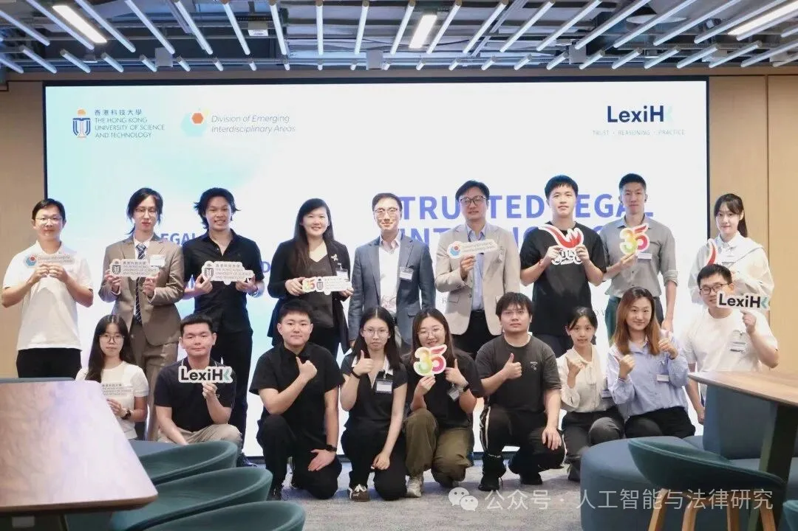
The first session extended the discussion from model performance to institutions, judicial practice and professional judgment. Professor Brian Tang, founding Executive Director of HKU’s LITE Lab, examined strategic and technical choices between buying, renting and building legal AI. Alvin Hoi-Chun Hung, Assistant Professor at City University of Hong Kong, compared judicial AI in China and South Korea and proposed a localization checklist covering scope, impact, responsibility, legal basis, visibility and remedies. Yulu Jin of Beijing Jiaotong University joined online to discuss how judicial professionals perceive and respond to erroneous AI advice.
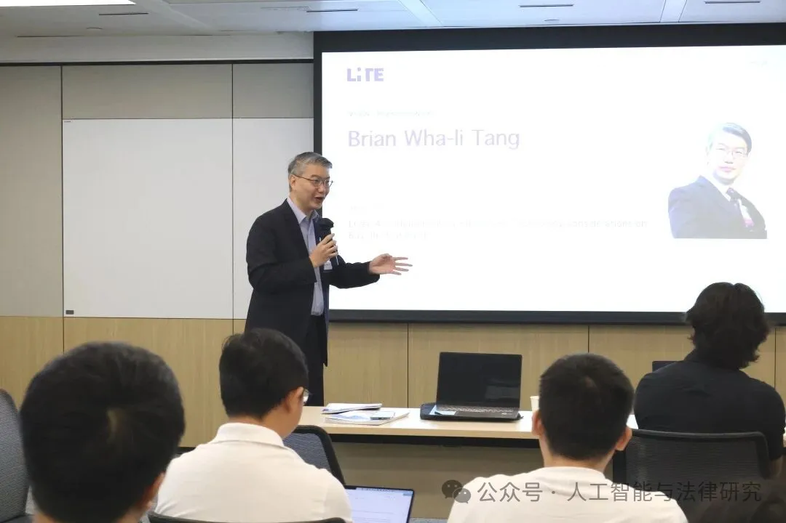
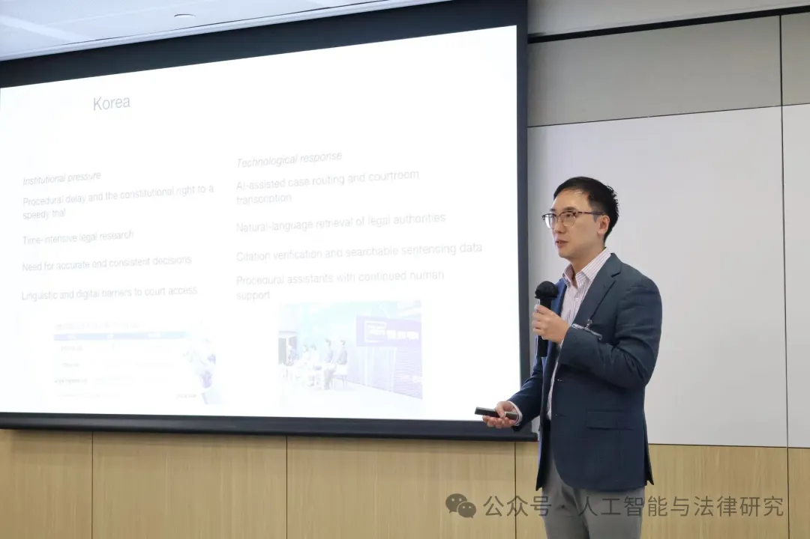
The second session addressed legal information services, technology products and legal practice. Chris Lau of Wolters Kluwer discussed how trusted legal AI can help lawyers deliver better work more efficiently. CaseByte co-founder Rocky Li demonstrated case-citation databases and intelligent statutory interpretation, and advocated a shared legal-AI benchmark for academia, practitioners and technology companies.
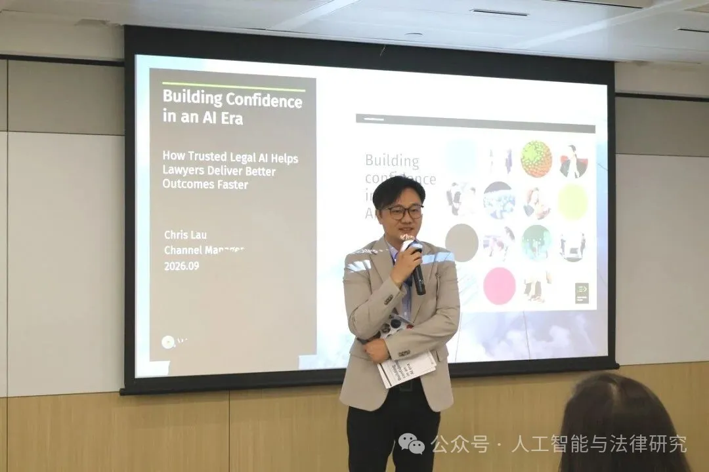
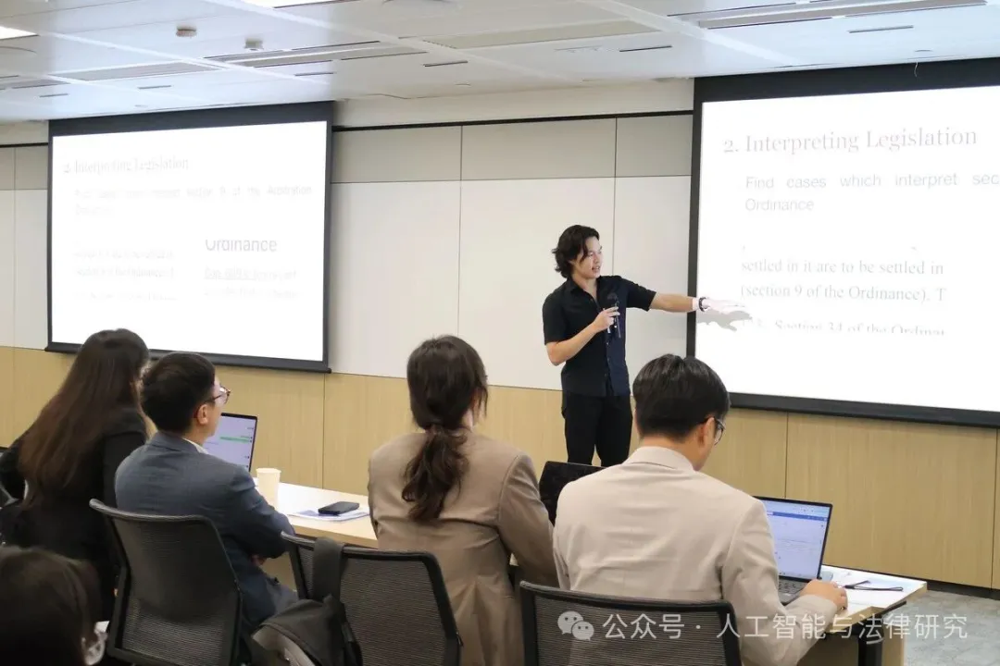
Zirui Wang, Chief Operating Officer of Detong Intelligent Chain, demonstrated how the anti-fraud tool ShieldAssist helps victims organize case materials and argued that AI should handle standardized tasks while people retain responsibility for exceptions and legal judgment. Wyatt Zhang of Fangda Partners discussed AI from an M&A lawyer’s perspective, including in-house due-diligence tools and the importance of communication and project-management experience.
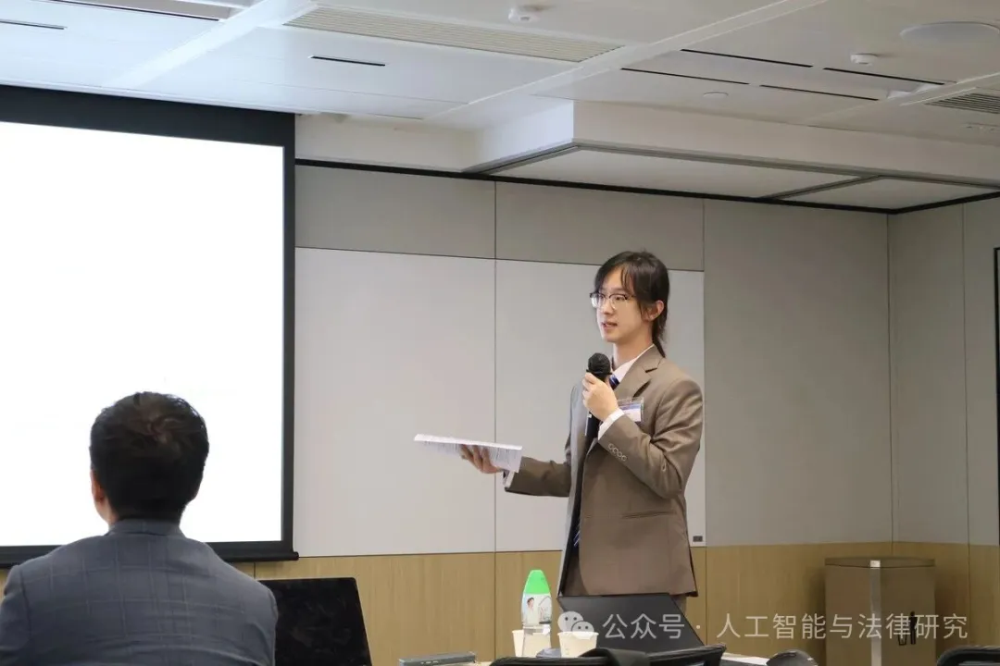
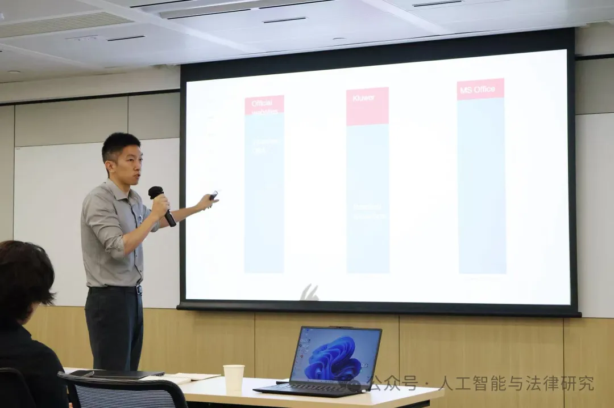
The roundtable identified model errors, untraceable citations, confidentiality and differences between institutional workflows as barriers to adoption. Participants recommended beginning with tasks that are easier to review, such as retrieval and first drafts, supported by human review and issue tracing. Cross-jurisdictional products should clearly identify legal sources, applicable jurisdictions and legal authority. Participants distinguished AI-assisted from automated decisions: providers should explain capabilities and sources, institutions should establish review procedures, and legal professionals should review material they adopt. Decisions affecting significant rights and obligations require substantive human judgment.
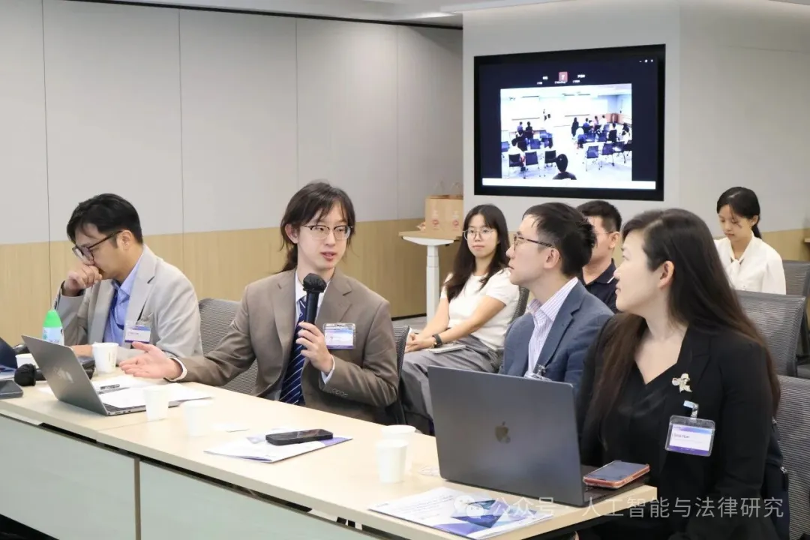
LexiHK product manager Xinyi Wang demonstrated cross-jurisdictional legal retrieval, emphasizing the relationship between sources, jurisdictions and conclusions. According to the team, LexiHK was developed with HKGAI and incorporates more than 200,000 statutory and case-law records. It supports legal chat, retrieval, case research, drafting, contract review, document interpretation, legal agents and visual search, with legal question-answering accuracy exceeding 90%. Traceability and human review remain central concerns for users.
In his closing remarks, LexiHK technical lead Shuchao Wu emphasized that trustworthy legal intelligence requires technical capabilities to work with professional judgment and responsibility mechanisms. The seminar focused on how legal AI can empower legal professionals: improving the efficiency and reliability of retrieval, document processing and case research so that practitioners can focus on matters requiring experience and judgment. The HKUST AI and Law research team and LexiHK will continue their research and product collaboration.
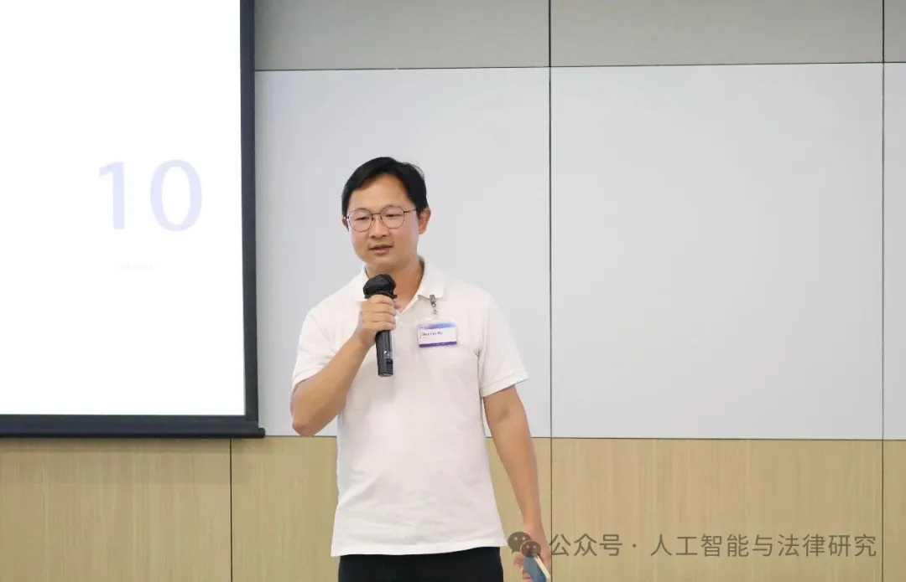